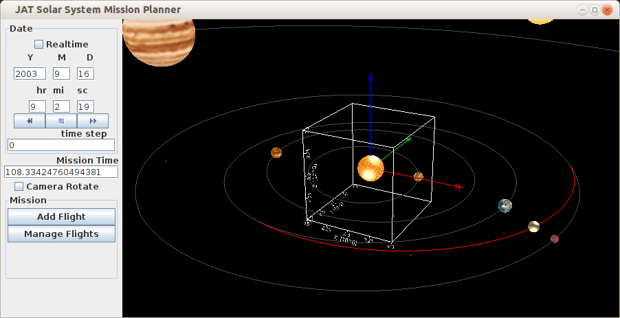
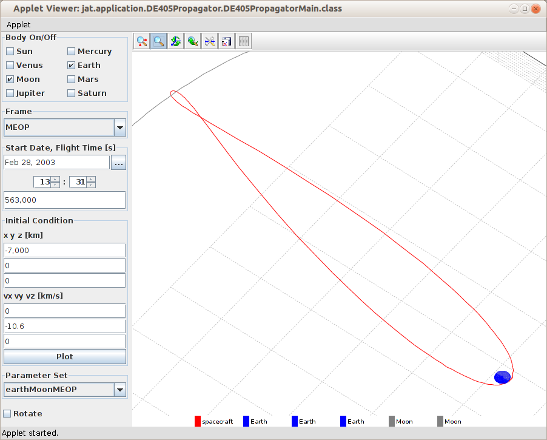

Java Astrodynamics Toolkit

Overview
JAT is a is a library of components to help users create their
own application programs to solve problems in Astrodynamics, mission
design, spacecraft navigation, guidance and control using Java or
Matlab. It is not an application program, although there are a number
of example programs included. You have to be able to write Java or
Matlab programs to use JAT.
Example programs are available to demonstrate the
capabilities of JAT as well as to allow new users to quickly learn how
to make use of the built -in features of JAT.
JAT is an open source project hosted by SourceForge.net: JAT SourceForge
Project Page

Introduction
After using COTS Astrodynamics software, we have learned that no
one application can satisfy all the needs of a researcher in the field
of Astrodynamics. Therefore, we decided that JAT should be a software
component library so that the users could have flexibility to create
their own applications. However, since we are asking users to develop
their own applications, the software components must be easy to
integrate and use.
The choice of the programming language is usually a design time
issue. However, in this project, the Java programming language was
chosen for the following reasons:
- Java is the preferred programming language of the initiators
of the project
- The initiators of the project already have a significant
amount of source code in Java for the project
- Java microchips might enable use of this software for
spacecraft control in the future.
- Java is faster than Matlab.
- Java is portable. There is no need to modify source code to
run on different platforms.
- Java is object oriented, making it easier to reuse and
maintain code.
- It is easier to write bug-free code in Java because there is
no pointer arithmetic and the Java compiler prevents a lot of errors.
- Javadoc provides an easy way to document the code so that it
can easily be used by others.
- Everything needed to develop Java is available for free!
Features
- Astrodynamics constants
- Time transformations
- Coordinate transformations
- Quaternions
- Orbit element conversions
- Gravity models: Two-body, Restricted three body problem,
JGM-3
- Attitude Dynamics
- Third body effects due to sun and moon
- Atmospheric drag models: Harris-Priester density model
- Solar radiation pressure
- Lambert Problem
- Kepler Equation solver
- Accurate orbit propagation
- Integrators: fixed and adaptive step-size Runge-Kutta
- JPL Ephemerides
- Linear equation solver
- Unconstrained optimization (BFGS)
- Non-linear equation solvers, including Newton-Raphson and
Regula Falsi
- Linear Algebra (based on JAMA and JMAT)
- Ground Tracks
- 3-D Visualization for orbits and trajectories
- GPS, INS and integrated GPS/INS simulation
Planned Features
- Constrained nonlinear optimization
- Gravity models: N-body
- Orbit estimation: batch and Kalman filter methods
- Trajectory optimization: Direct and indirect methods for
continuous thrust
- General Utility classes for optimal control using thrust
vectors and state-space models
- General Utility class for Mission Design with multiple
maneuvers and launch windows
- Flyby trajectory design
- Genetic algorithm for optimization
- N-body impulsive transfer problems.
- Optimal attitude dynamics
- Station-keeping
Licensing
JAT
is free software distributed under the terms of several licenses: Licenses
Copyright (c) 2002 The JAT Project. All
rights reserved.
![]() Copyright © Tobias Berthold. This work is licensed under
a Creative Commons License.
Copyright © Tobias Berthold. This work is licensed under
a Creative Commons License.